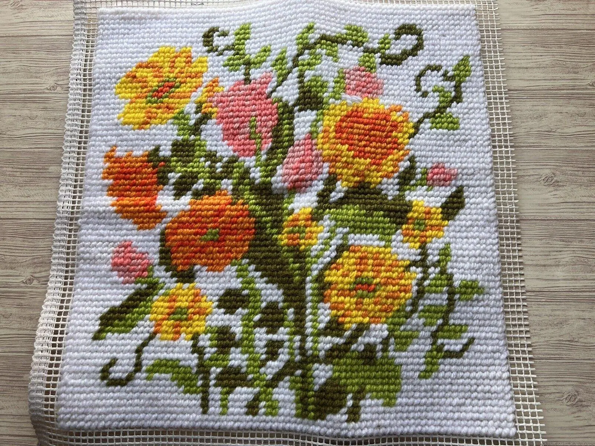
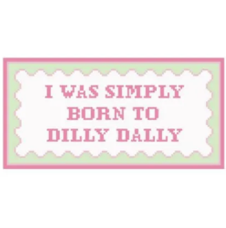

Needlepoint subculture is immediately recognizable through its distinct visual language that blends tradition with experimentation in a way that feels both familiar and unexpectedly bold. At a glance, the defining characteristic is the grid: the stiff canvas that structures every design into small, repeating units. This creates a pixel-like aesthetic, where images are built through blocks of color rather than fluid lines. As a result, even the most intricate designs carry a slightly geometric, tactile quality. Florals, animals, text, and abstract forms all take on this textured, stitched appearance, giving each piece a sense of depth and physical presence that digital imagery often lacks.
Color plays a major role in the visual identity of the subculture. Some practitioners lean into soft, muted palettes creams, dusty pinks, faded greens that evoke vintage patterns and domestic nostalgia. Others push toward high-contrast, saturated colors that feel graphic and contemporary. It’s not unusual to see neon thread against a neutral background, or playful color clashes that make the piece feel modern and intentionally disruptive. Typography is also a strong visual element; stitched words and phrases often appear in blocky, handmade lettering, ranging from delicate cursive styles to bold, almost pixel-font declarations. These text-based pieces are especially significant, as they turn needlepoint into a direct form of communication.

Florals, animals, text, and abstract forms all take on this textured, stitched appearance, giving each piece a sense of depth and physical presence that digital imagery often lacks.
The tools of needlepoint are simple but essential, and part of the appeal lies in their accessibility. A basic setup includes a needle, thread or yarn, and canvas, often stretched over a frame or held in a hoop. Yet within these basics, there is room for personalization. Stitchers carefully select thread textures, wool, cotton, silk, depending on the desired finish, and may experiment with different stitching techniques to create varied patterns and surfaces. The repetitive motion of stitching becomes a defining behavior: rhythmic, meditative, and often deeply habitual. Many participants describe the act as grounding, a way to focus attention and disconnect from constant digital input that surrounds us everyday.
Needlepoint values patience and intentionality. Projects are rarely rushed. Instead, they are worked on gradually, sometimes over long periods, allowing the maker to fully engage with the process. It’s common for participants to carry their projects with them, stitching in quiet moments on public transport, in parks, or at home while listening to music or podcasts. This portability turns needlepoint into a companion activity, something that integrates into daily life rather than being confined to a specific time or place.

The environments associated with needlepoint reflect it's blend of solitude and community. On one hand, there are intimate, personal spaces: cozy corners, well-lit desks, or comfortable chairs where individuals can focus quietly. These environments often feel warm and lived-in, filled with materials, partially completed works, and collections of thread in carefully chosen colors. On the other hand, there are shared spaces craft circles, workshops, and online platforms where participants connect. In these settings, finished pieces are displayed, techniques are exchanged, and inspiration circulates freely.
Altogether, the visual and behavioral characteristics of needlepoint subculture emphasize tactility, slowness, and presence. It is a world built not on speed or perfection, but on texture, repetition, and care where every stitch contributes to something both visually striking and deeply personal.